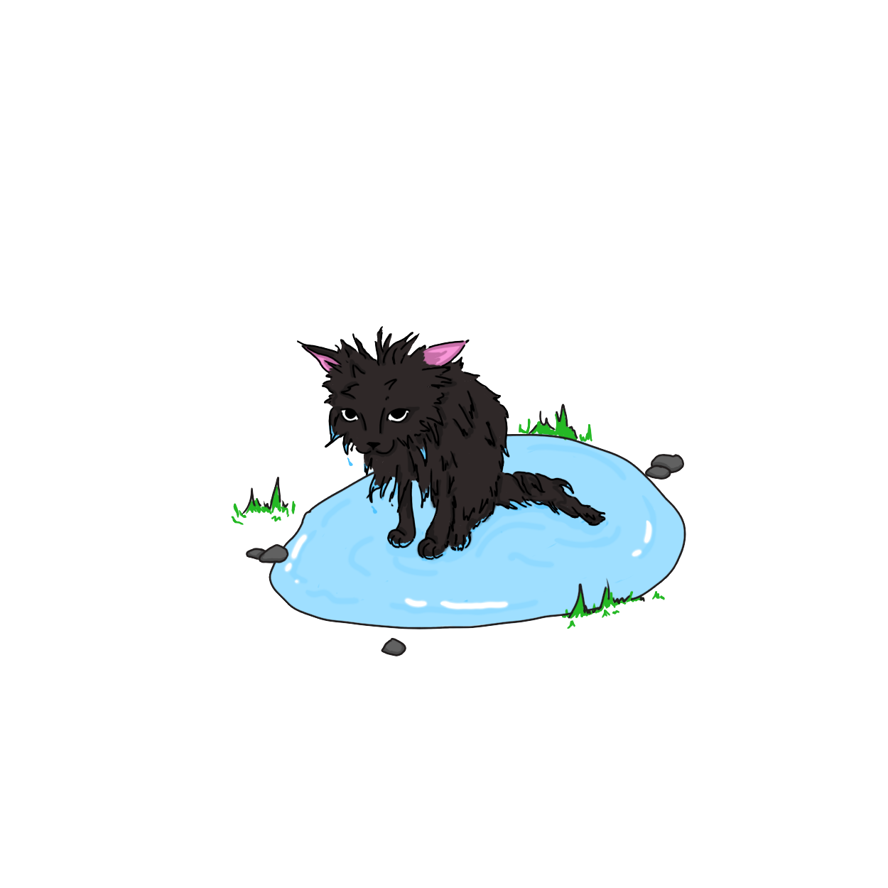

Глава I
Картина мира
В небольшом доме, на подушке лежат черненькие кошка и её котёнок. Для него это место было родным — маленький котёнок был до того мал, что мама-кошка никогда не выпускала его за пределы мягкого "домика".
И вот, в этот день, мама-кошка покинула подушку и куда-то убежала. Котёнку такое событие не было новостью — мама часто убегала и тут же возвращалась. Но прошло несколько мгновений, а кошки всё не было и не было.
Откуда-то извне веяло свежестью. Лёгкий ветер гонял пух, и тот залетал через окна в дом и долетал до подушки котёнка. Он его сразу заметил. Пушистый, красивый — его так и хотелось потрогать и опробовать на вкус.
Котёнок стал охотиться за пухом. Он бегал и прыгал, пытаясь захватить лапками нежные летающие комочки, но всё было бесполезно и те отлетали от него пока, наконец, окончательно не улетели.
Котёнок оказался перед большой-большой дверью. Она была приоткрыта, и через дверную щель исходил яркий свет и та самая свежесть. Ни разу котёнок не выходил за пределы подушки, весь мир был ему неизвестен, а потому и интересен. Им управляло желание узнать что находится за дверью. Он протиснулся через щель и оказался снаружи.
Яркий свет заполонил весь его взор. Но даже без зрения котёнок мог понять, что всё здесь по-другому: и пол ощущается более рыхлым, и запах витает более свежий, и сам воздух совсем иной. Когда его глаза привыкли к новому свету и зрение вернулось к нему, он находился в окружении чего-то непонятного: под ногами странный коричневый зернистый пол с выступающими зелёными ленточками, по сторонам какие-то штуки с такой же зелёной шерстью, а наверху синий потолок, который как будто находится бесконечно далеко. И всё было незнакомо, и всё шевелилось.
Котёнку было страшно, он был потерян. Он не то что не знал как это всё называется, он даже не знал что это всё. Котёнок не мог ориентироваться без понимания того, что его окружает.
Ветер склонил "штуку" со странной шёрсткой, и она коснулась макушки котёнка. Тот испугался, подпрыгнул и побежал прочь от страшного "хищника", который, как ему казалось, хотел его взять.
Он выбежал через проход в деревянной "стене", окружавшей дом, на тропинку. В последний момент котёнок заметил, что оказался прямо перед такими же "хищниками".
Бежать было некуда, кроме как вдоль тропинки. Справа котёнка "хищники" с зелёной шерстью наравились его схватить, слева высились деревянные "стены".
А он всё бежал, не зная куда, как вдруг на повороте тропинки пол стал мокрым и скользким и котёнок, поскользнувшись, свалился в грязную воду.

Котёнок изнемог, сердце его билось как бешенное, а сам он думал: "ну всё, я больше не могу бежать... это конец..."
Мимо этой грязной воды по тропинке бежали два котёнка. Один — рыжий, а второй — белая кошечка. Они куда-то торопились, потому только кошечка заметила лежащего в воде грязного котёнка.
— Ой, смотри, здесь котёнок весь грязненький.
Рыжий котёнок осмотрелся. И вправду, котёнок, грязненький. — Мы торопимся — лишь сказал он, не думая замедлять шаг.
— Вдруг ему нужна помощь?
— Его проблема. Если мы ему будем помогать, мы не успеем на молокопитьё.
— Всё время ты думаешь о себе! Так нельзя!
Рыжий котёнок остановился. Хотя он и был упрямым, он не хотел обидеть свою подругу. Недовольный, рыжий повернул обратно в сторону того котёнка, которого они уже успели пробежать. "И всё же, мы можем успеть" — надеялся он.
— Котёнок, чего ты здесь лежишь? — спросила белая кошечка
Почти ставший коричневым котёнок лишь хлопал глазами, смотря на незнакомцев.
— Тебе нужна помощь? — снова спросила кошечка, — Ты весь грязный!
Молчание.
— Вставай уже. Не тяни наше время — бяркнул рыжий котёнок.
Котёнок послушно встал и выполз из той низины, в которую он свалился. Ветер перестал дуть, и, к его удивлению, зелёные "хищники" как будто перестали его замечать и пытаться схватить.
— Мы тебя отмоем, здесь есть речка недалеко... а ещё мы торопимся на молокопитьё, поэтому не отставай!
Котята побежали.
"Молокопитьё..." — думал котёнок. Это слово он никогда не слышал, но все равно он понимал что оно обозначает.
Котята бежали по тропинке. Впереди всех был рыжий. Вдруг он свернул прямиком к зелёным "хищникам". И белая кошечка тоже. А наш грязный котёнок боялся и подойти к своим врагам.
— Ты где там? Кустов испугался? — послышалось из глубин зелёной шерсти.
"Кусты... Вот как они называются." — думал котёнок.
— Ну же! — высунулась морда белой кошечки — они тебя не укусят!
Котёнок решился пройти через кусты, и перед ним открылось поле с небольшой речкой поблизости. Как раз там его и искупали.
Пара котят решила взять несмышлёного котёнка и на молокопитьё. Это оказался, как ему объяснили и как он понял на практике, целый ритуал, который совершается в определённое время днём и который состоит в том, что человек даёт им миску с молоком, и они его пьют.
С животом, полным молоком, котёнок возвращался домой. Теперь его окружали кусты и деревья, земля и небо. Многим словам он выучился от тех котят, и многое познал сам. Например то, что кустам, на самом деле, неинтересны котята и они их не едят. То, что деревья — как кусты, только больше. И многое, многое другое... Он больше ничего не боялся и часть, но важная часть, мира стала ему понятна.
А вот и мама-кошка, встревоженная ходит возле забора и вынюхивает что-то. Заметив своего котёнка, она подбежала к нему и, схватив за загривок, понесла домой. Долго мама-кошка ругала его, но он, всё же, был доволен своим приключением.
С самого начала своей жизни человек познаёт мир, своё окружение. В результате такой деятельности в его сознании образуются концепты — понятия о мире, в которые входят и чувственные образы, и ассоциации, и оценка.
Совокупность концептов называют картиной мира. Именно картина мира отражает все знания человека о мире.
Наш котёнок так же обладает своей картиной мира.
Так как он ни разу не выходил на улицу, то и многие там вещи ему незнакомы. Иначе говоря, у него нет концептов об этих вещах.
Понятное дело, что котёнок потерялся в незнакомом мире, не понимал что его окружает. Всё это проиходило из-за того, что у него нет определённых концептов. Он столкнулся с той частью мира, которой нет в его картине мира.
Картина мира существует для того, чтобы человек 1) понимал мир и 2) мог ориентироваться в мире. Поэтому картина мира не выполняла свои функции и котёнок был потерян — она была слишком ограничена, в ней, опять же, не было представлено той части мира.
Но, всё же, картина мира котёнка обогатилась в тот день. Он не переставал познавать мир, тем самым расширяя картину мира
Часто картины мира людей имеют много общего. Например, выделяют национальные картины мира, которые являются общими для всего отдельного народа.
Такой же картиной мира является языковая картина мира. Это такая картина мира, которая является общей для людей, говорящих на одном определённом языке (например русском, или, в нашем случае, кошачьем).
Существование языковой картины мира объясняется тем, что некоторое число концептов имеет отражение в языке, обычно в словах (а вообще — во всех языковых средствах, которые несут какой-либо смысл). То есть, языковую картину мира можно определить иначе как набор таких концептов, которые имеют отражение в языке.